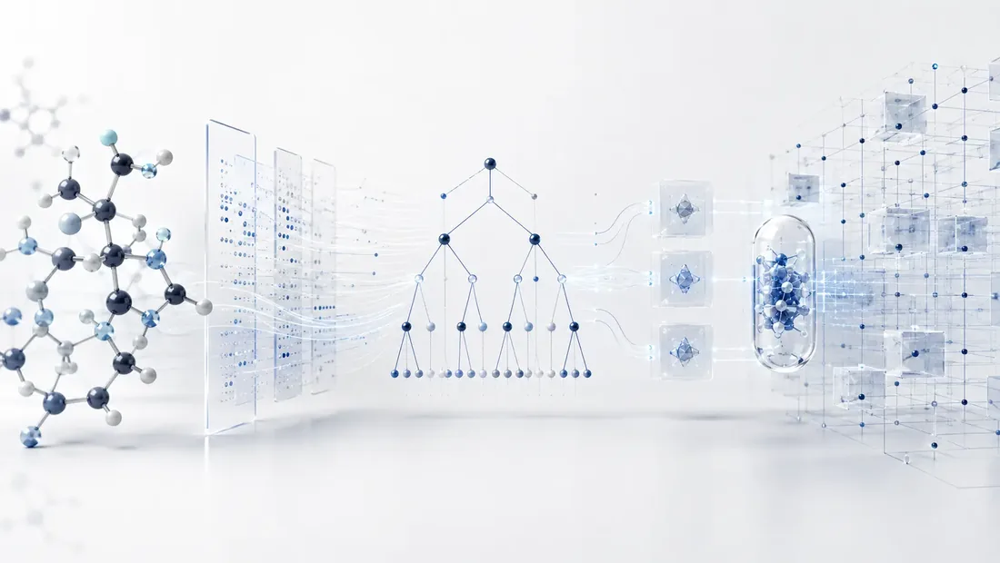
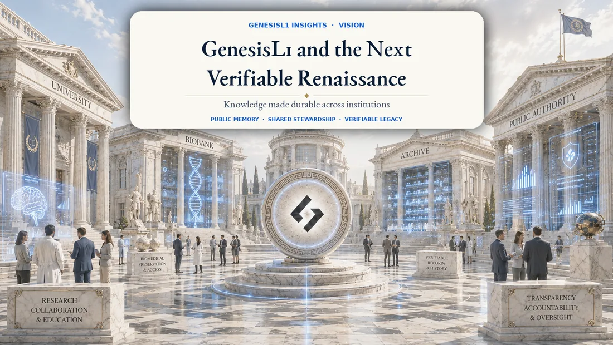
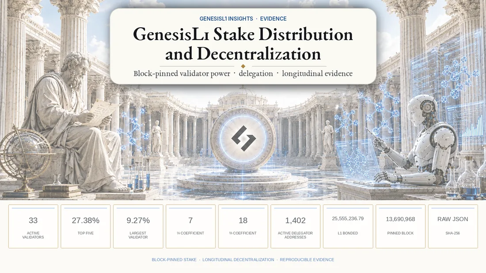

GenesisL1 Insights
Insights
Research, evidence and perspectives on public scientific infrastructure.

01 · Technical foundation
GenesisL1: The DeSci Layer 1 Where Scientific Data, Verifiable AI and Digital Rights Become One System
How GenesisL1 connects molecular data, deterministic Model NFTs, AI agents, encrypted scientific rights and community governance in one public Layer 1.
Read article↗

02 · Vision
GenesisL1 and the Next Verifiable Renaissance
A literary and scientific essay on public memory, institutional stewardship and why the next computational renaissance must be verifiable.
Read article↗

03 · Evidence
GenesisL1 Stake Distribution and Decentralization
A reproducible analysis of validator power, bonded stake and delegator concentration across five pinned GenesisL1 network states through block 13,690,968.
Read article↗